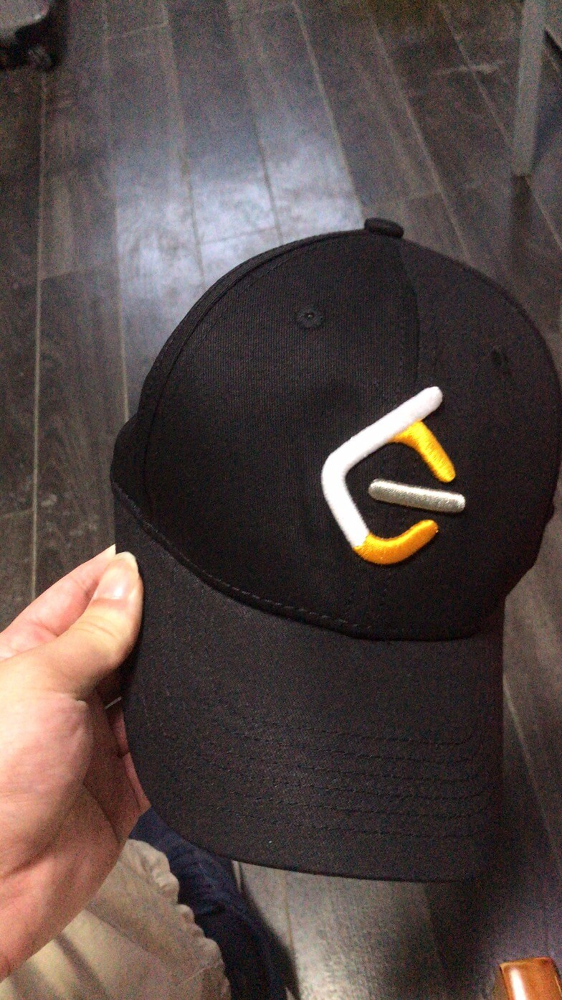
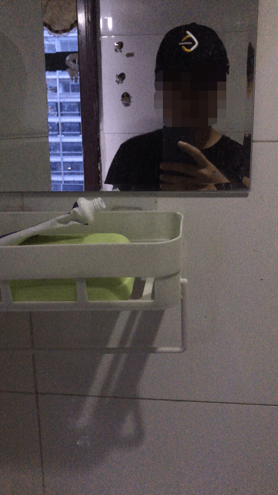

个人近期状态分析和总结
从2020年11月入职新工作到现在，已经半年多了，中间其实并没有发生什么特别的事，生活可谓一潭死水，但也正是如此，我才决定写这篇博客，因为如果再这样下去，我将离我最初的设想越来越远。
近期在干什么
最近这一个月以来，主要是在忙工作上的事。自从几个月之前，负责平台发票模块的同事离职以后，这一块功能一直没人维护，公司在这方面也没有什么太多需求，前几周的时候得知，发票这部分的功能会有一批新需求，其他的后端同事基本手头都有些任务，于是顺理就指派给我了。
发票模块的功能、代码我之前完全没有接触过，所以是一个全新的挑战，不过好歹也在这家公司待了半年有余，主动联系了一下离职的同事，问了一些需要注意的地方（虽然后来就完全自己看代码，再也没问过了），就开始读代码了。
几个新功能开发用了我10天左右的时间，第一天主要是了解发票功能是怎么跟第三方对接的（我们平台的发票模块是跟一个专业的开票平台对接的），微服务+web service+xml格式的数据传输，这部分技术我不是特别熟，尤其是web service，是我第一次接触。跟三方平台对接的时候，对方给的是一个wsdl地址，并给了个测试账号。
经过我一下午的研究，下载了一个apache cxf，把对方给我的wsdl生成了一系列Java类，如此，就可以通过生成的类来访问对方的wsdl接口。他们的完全使用xml传输数据，跟现在常用的json还是有一点差别的，真正传输之前，需要登录对方的设备，相当于是鉴权，用的是他们给的测试账号，拿到的response是一个loginKey，所有后续业务都需要附带这个loginKey。
request和response都是xml数据，我们这边之前用的是jabx库，可以将Java类与xml之间进行相互转换，在这个过程中还需要按照对方的要求进行3des加密，并最后用Base64编码将数据进行转换。
10天的开发，大约到6月22日左右才上线这几个新功能，但bug可谓层出不穷，有我的责任也有别人的责任，总之6月22日到7月1日之前的这段时间，是我最焦头烂额的，疯狂出现各种exception和性能问题，一直在提交各种merge request和hotfix，上周的时候才算真正修复完毕。
颓废的生活
忙工作的这段时间，我基本每天熬夜到两三点，其实真正的工作最晚也只到十一点，剩下的时间基本都是躺在床上玩手机，晚上回家前还基本都会路边买一份炒饭。
第二天大概8点40起床去公司，基本都是9点30前后到工位，早餐也没怎么吃。这段时间工作特别没精神，脑子也转不动，实际上就是熬夜导致的，熬夜+不运动差不多算是我这半年以来头号问题了，虽然最近没测体重，但我认为应该比过年那段时间重了不止几公斤了吧…
除了熬夜外，最近这两周还报复性的打游戏，这也算我熬夜主要干的事情之一，直到昨天打开游戏发现怎么玩也没兴趣了以后，终于卸载了游戏，准备重新整顿一下，开始调剂一下生活。
学习也荒废了至少一个多月吧，我知道忙工作并不能成为不学习的理由，但最终还是荒废了。打算下周开始重头学习一下Elasticsearch，这也算后面一段时间工作的学习重点；Leetcode实际上从过年以后一直有在刷，并且时间允许的情况下一直会去报名参与周赛，但实际上我主要是为了5400积分的棒球帽…

本来是想久违地发个朋友圈，但当我带上这帽子以后，感觉自己实在是丑的不行，虽然帽子本身还是不错的，于是作罢…

所以实际上我前几个月从刷题中收获到的东西实际上非常有限，一直在学习dp，并且找了不少的题做，但到目前为止，面对各种类型的dp仍然没有思路。而且自从拿到帽子后，我也基本就没有再刷过题了，说实话，我还是继续想保持这个习惯的，即使不再是每日三题了，每日只刷一题其实也足够了，最重要的是算法要有个日积月累的过程。
近期规划
分为学习方面和生活方面说一下近期的规划吧。
学习方面
如上面所说，学习方面也不打算开太多新坑，主要分为三方面吧。
- 继续维护技术博客，后续还会写一些技术博客，但应该不会发那些自己已经比较了解的技术，而主要是自己不怎么熟的技术。
- 继续保持刷题的习惯，Leetcode从本科一年级到现在做了大概400多题吧，实际上都是刷几题停一段时间，而且根本没怎么做过笔记、总结，所以实际上从刷题中有效学到的东西非常少，接下来应该重点学一下怎么总结学到的算法。
- 重点学习各种中间件，我目前的公司项目中，实际上用到各种中间件比较少，但最近一些新的需求导致我们将要开始用它们了，包括消息队列、Spring Cloud Stream、Spring Batch等。
生活方面
生活方面就两件事。
- 早睡，连续几个月的熬夜我感觉是一个定时炸弹，不知道哪天，也许身体就垮了，况且熬夜已经严重影响我的工作状态了，这必须是第一个要解决的问题。
- 运动，我现在不少问题都是由不运动引发的，想要改善自己的精神面貌，除了早睡就得运动，正好最近我哥推介给我一个健身房连锁店，我觉得还不错，打算过几天去看一下。
总结
我不想日后回忆起自己刚毕业那段时间的时候，总是这样一幅颓废的景象，即使现在天天从网络上接收到的都是负能量，但我还是希望自己不要活成自己最讨厌的样子，引用一下自己过去某段时间的座右铭，“Make a change”，即使很难，但仍要尝试改变现状。